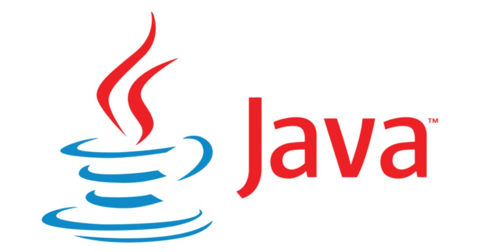

TOP 5 CODING LANGUAGES
Based on their popularity
1. Javascript
2. Python
3. Go
4. Java
5. Kotlin
More Details
1. Javascript

JavaScript is a high-level programming language that is one of the core technologies of the World Wide Web. It is used as a client-side programming language by 97.8 percent of all websites. JavaScript was originally used only to develop web browsers, but they are now used for server-side website deployments and non-web browser applications as well.
Javascript was created in 1995 and was initially known as LiveScript. However, Java was a very popular language at that time, so it was advertised as a “younger brother” of Java. As it evolved over time, JavaScript became a fully independent language. Nowadays, JavaScript is often confused with Java, and although there are some similarities between them, the two languages are distinct.
Javascript is the most popular programming language in the world and is in high demand among various organizations. The average Java developer earns around $112,152 each year.
- Level: Beginner to Intermediate
- Skills Needed: HTML and CSS to define the content and layout of web pages
- Platform: Cross-platform (desktop, mobile, web)
- Popularity Among Programmers: The most popular programming language in the world
- Benefits:
- Easy to learn and implement
- Used everywhere on the web
- Can run immediately within the client-side browser
- Reduces the demand on the website server
- Downsides: Can sometimes be interpreted differently by different browsers which makes it difficult to write cross-browser code.
- Degree of Use: Widely used; highly applicable
- Annual Salary Projection: $112,152
2. Python

Python is one of the most popular programming languages today and is easy for beginners to learn because of its readability. It is a free, open-source programming language with extensive support modules and community development, easy integration with web services, user-friendly data structures, and GUI-based desktop applications. It is a popular programming language for machine learning and deep learning applications.
Python is used to develop 2D imaging and 3D animation packages like Blender, Inkscape, and Autodesk. It has also been used to create popular video games, including Civilization IV, Vegas Trike, and Toontown. Python is used for scientific and computational applications like FreeCAD and Abacus and by popular websites like YouTube, Quora, Pinterest, and Instagram. Python developers earn average annual salaries of about $109,092.
- Level: Beginner friendly, Python enables a beginner to become productive quickly
- Skills Needed: Problem-solving, abstract thinking
- Platform: Web, Desktop
- Popularity Among Programmers: Becoming continuously more popular
- Benefits:
- Flexible
- Naturally/Intuitively readable
- Highly regarded official tutorials and documentation
- Scripted as opposed to compiled
- Downsides: Doesn't start with programming basics (known to abstract too many important basic concepts)
- Degree of Use: Coding skills widely used; popular in both technical education and business use
- Annual Salary Projection: $109,092
3. Go
Go was developed by Google in 2007 for APIs and web applications. Go has recently become one of the fastest-growing programming languages due to its simplicity, as well as its ability to handle multicore and networked systems and massive codebases.
Go, also known as Golang, was created to meet the needs of programmers working on large projects. It has gained popularity among many large IT companies thanks to its simple and modern structure and syntax familiarity. Companies using Go as their programming language include Google, Uber, Twitch, Dropbox, among many others. Go is also gaining in popularity among data scientists because of its agility and performance.
Go developers can earn an average annual salary of $141,654, and hitting up to $261,000.
- Level: Beginner to intermediate
- Skills Needed: Easy to learn if you already know at least one other programming language; otherwise, you just need patience and a willingness to learn.
- Platform: Cross-platform, mainly desktop
- Popularity Among Programmers: Not as popular as Java or Python, but it has been increasing in popularity
- Benefits:
- Widely considered a “minimalist” language
- Transparent code
- Compatible
- Fast
- Downsides: No generics (which means you may end up writing more code than you would in other languages); very little library support; Go developer community is not very robust or supportive
- Degree of Use: Widely used, particular for Google applications (created at Google)
- Annual Salary Projection: $141,654
4. Java

Java is one of the most popular programming languages used today.
Owned by Oracle Corporation, this general-purpose programming language with its object-oriented structure has become a standard for applications that can be used regardless of platform (e.g., Mac, Windows, Android, iOS, etc.) because of its Write Once, Run Anywhere (WORA) capabilities. As a result, Java is recognized for its portability across platforms, from mainframe data centers to smartphones. Today there are more than 3 billion devices running applications built with Java.
Java is widely used in web and application development as well as big data. Java is also used on the backend of several popular websites, including Google, Amazon, Twitter, and YouTube. It is also extensively used in hundreds of applications. New Java frameworks like Spring, Struts, and Hibernate are also very popular. With millions of Java developers worldwide, there are hundreds of ways to learn Java. Also, Java programmers have an extensive online community and support each other to solve problems.
Java is a more complex language to learn, but experienced developers with Java coding skills are in high demand. The average Java developer earns around $109,225 each year.
- Level: Intermediate
- Skills Needed: Problem-solving, knowledge of the object-oriented structure
- Platform: Web, Mobile, Desktop
- Popularity Among Programmers: One of the world's most popular; high deman
- Benefits:
- Regarded as a good start for learning to think like a programmer and gain coding skills
- You'll be able to access/manipulate the most important computer functions, like the file system, graphics, and sound for any fairly sophisticated and modern program that can run on any operating system.
- Downsides: Lots of new vocabulary to learn; a higher-level language
- Degree of Use: Widely used; highly applicable
- Annual Salary Projection: $109,225
5. Kotlin

Kotlin is a general-purpose programming language originally developed and unveiled as Project Kotlin by JetBrains in 2011. The first version was officially released in 2016. It is interoperable with Java and supports functional programming languages.
Kotlin is used extensively for Android apps, web application, desktop application, and server-side application development. Kotlin was built to be better than Java, and people who use this language are convinced. Most of the Google applications are based on Kotlin. Some companies using Kotlin as their programming language include Coursera, Pinterest, PostMates among many others.
- Level: BIntermediate to advanced
- Skills Needed: Prior experience with programming languages, particularly Java
- Platform: Web, Mobile, Desktop, Server
- Popularity Among Programmers: Increasingly popular; used for Android applications
- Benefits:
- Less code-heavy than Java and other languages;
- Naturally/Intuitively readable
- Relatively easy to adopt
- Fully compatible with Java
- Downsides: Fluctuating compilation speed; no static keyword in Kotlin
- Degree of Use: Widely used; highly applicable
- Annual Salary Projection: $136,000
For more information about progamming languages and coding click here.